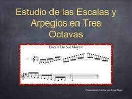

Lista de Tareas
- Practicar el instrumento principal
- Practicar al menos una hora diaria
- Afinar el instrumento
- Revisar y aprender nuevas piezas musicales.

- Agregar partituras de musicos clasicos
- Trabajar en técnicas específicas.

- Arpegios
- Escalas
- Escuchar grabaciones de músicos

- Escuchar Artistas contemporaneos
- Escuchar varios generos musicales